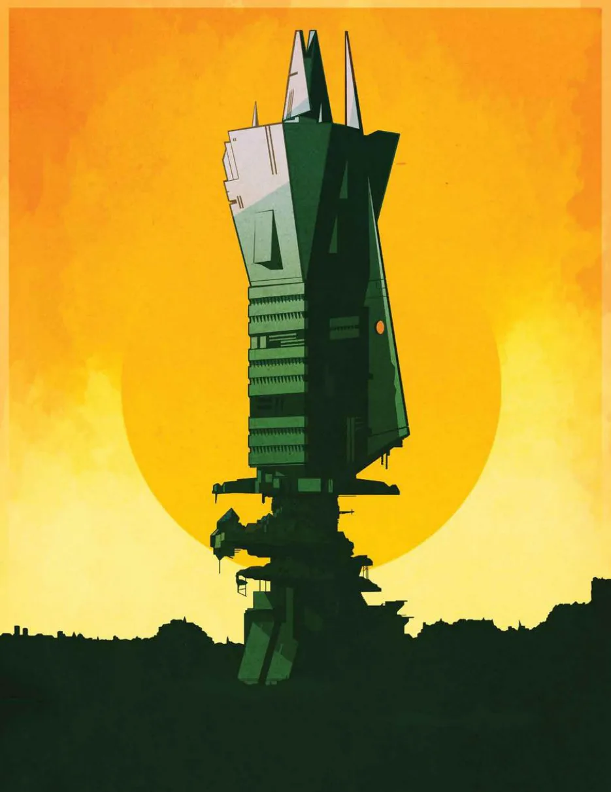
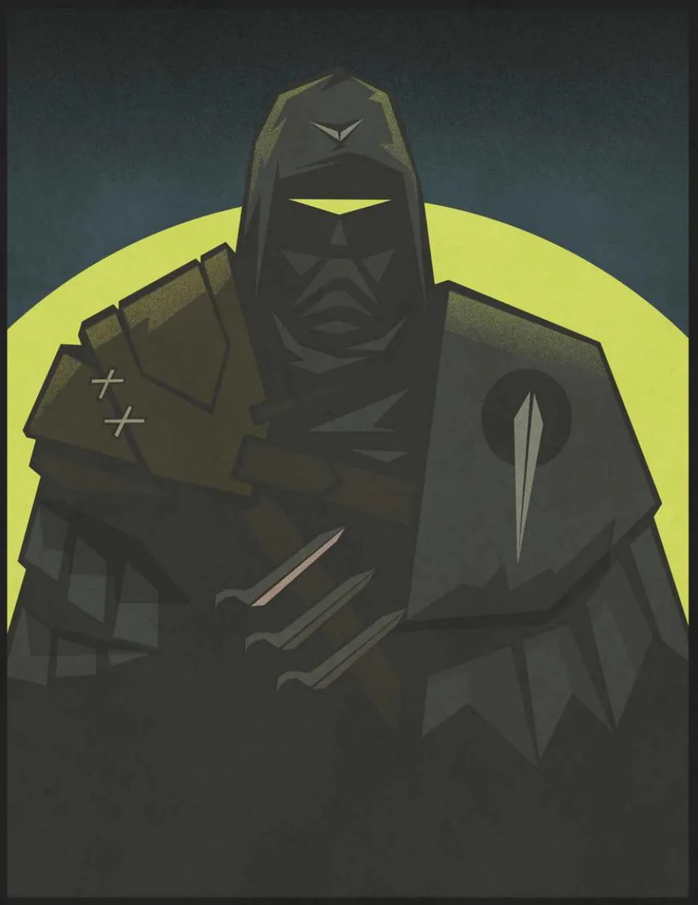
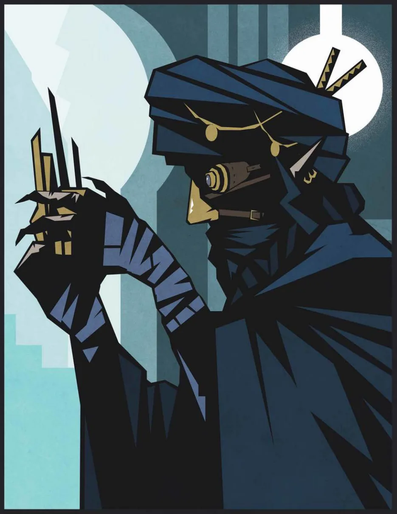
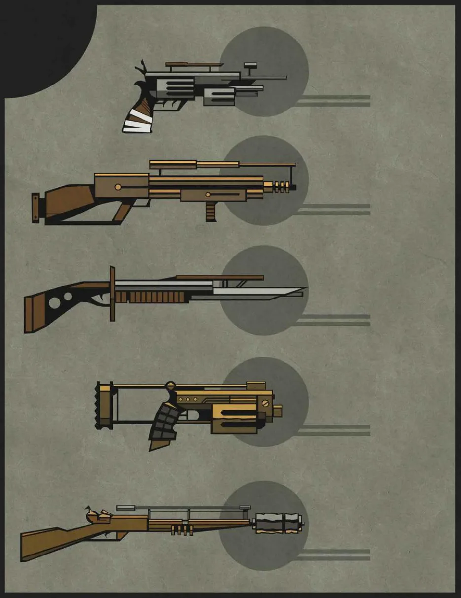
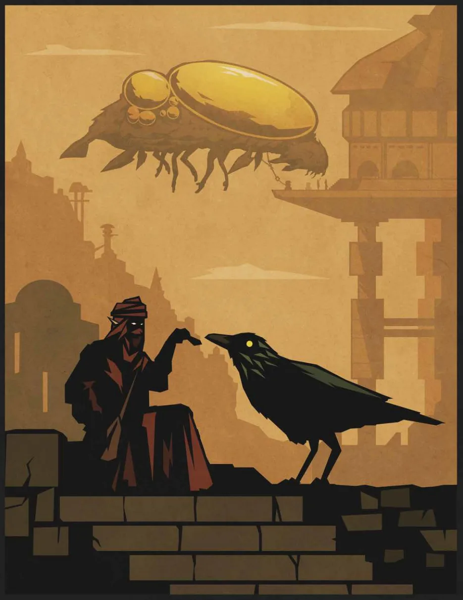
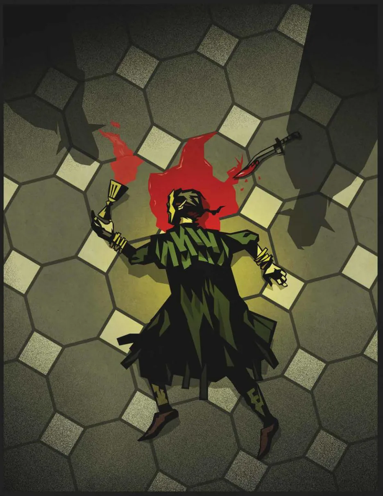
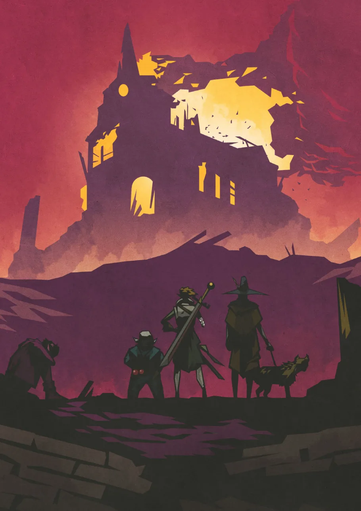
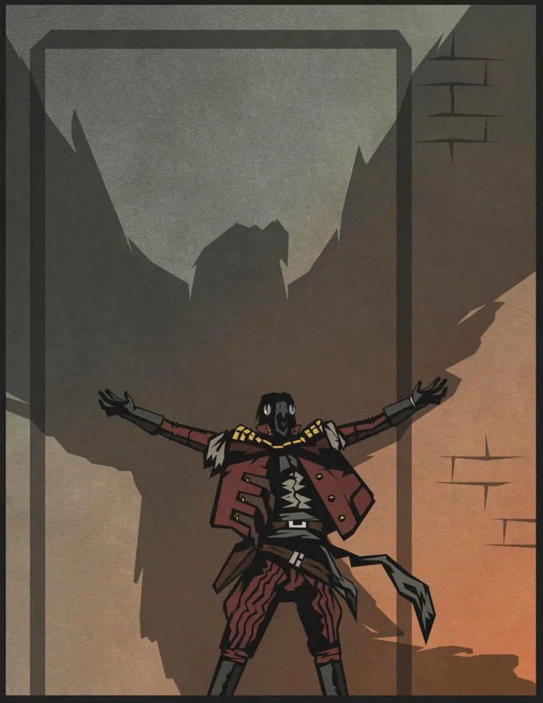
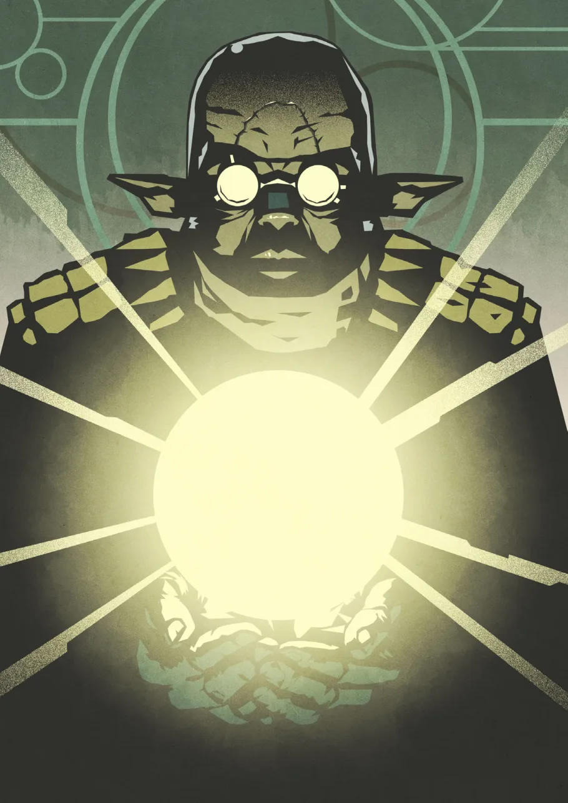

Spire ist eine meilenhohe, unmögliche Stadt, älter als irgendwer zurückdenken kann.









Die Sonnenkirche, geliebt von den erobernden Aelfir, bereitet die rituelle Hinrichtung ihres derzeitigen Erzbischofs vor …
Quickstart · S. 18–24 · 6 vorgefertigte Figuren